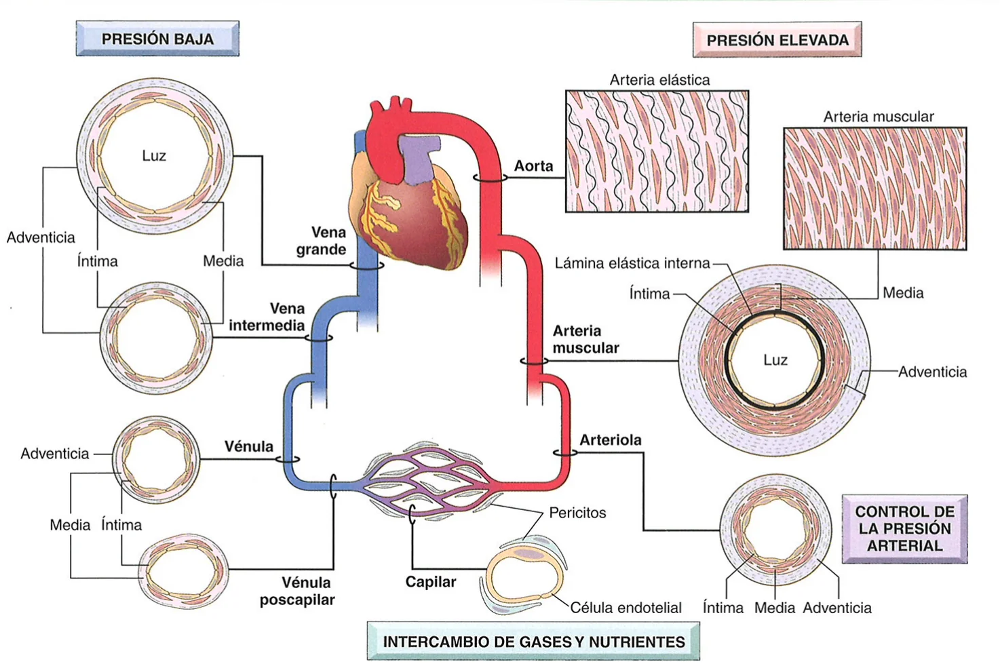
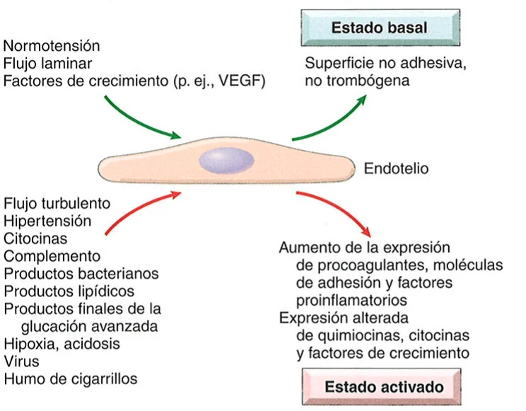
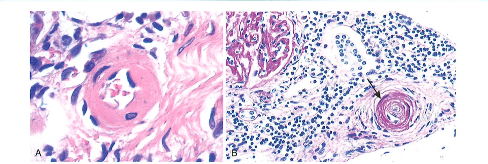
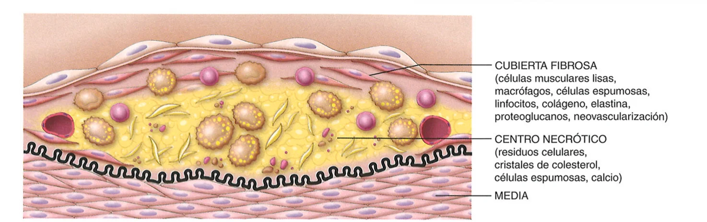
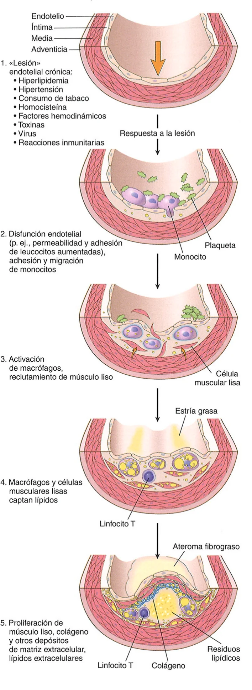
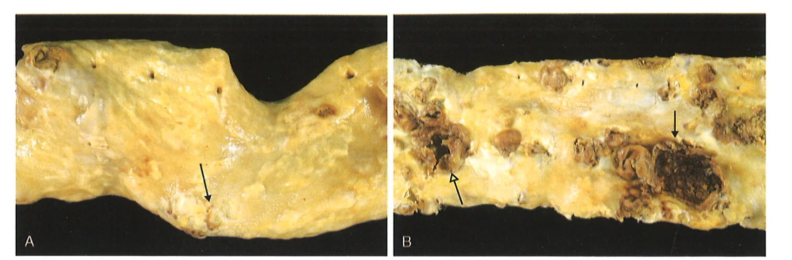
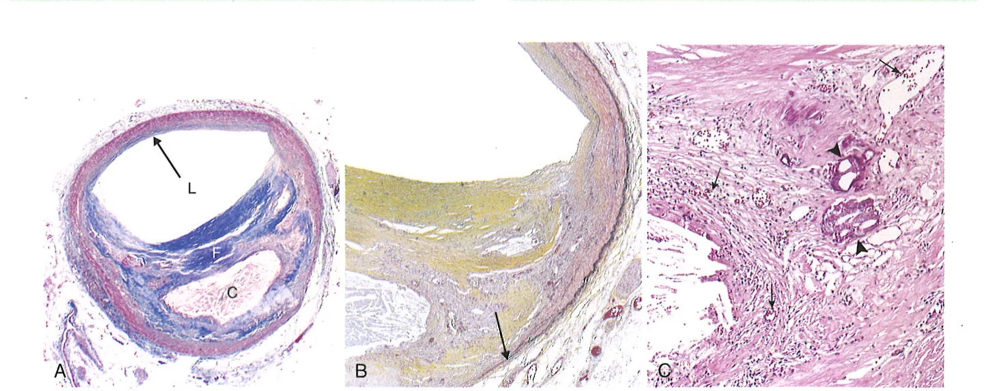
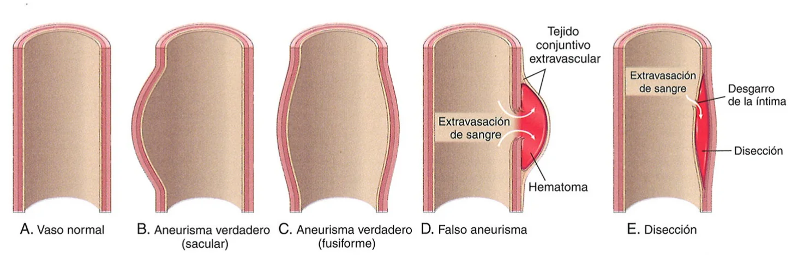

Qué cubre esta guía
Las citas p. N corresponden a la página impresa del libro. El texto se publica sin agregar contenido que no esté en el capítulo.
Lo esencial en 60 segundos
- Dos mecanismos básicos de enfermedad vascular: estenosis u obstrucción luminal (ateroesclerosis, trombosis) y debilitamiento parietal con dilatación o rotura p. 485.
- La disfunción endotelial proinflamatoria y protrombógena es el punto de partida común de trombosis, ateroesclerosis e lesión por hipertensión p. 488.
- Hipertensión: diastólica >80 o sistólica >120 mmHg; 90-95% es esencial; la forma maligna da arterioloesclerosis hiperplásica en piel de cebolla con arteriolitis necrosante p. 489-493.
- Ateroesclerosis: disfunción endotelial, LDL oxidadas captadas por receptores depuradores, células espumosas, CML y colágeno; las placas vulnerables rompen y trombosan p. 497-504.
- Disección aórtica: >90% con hipertensión; tipo A compromete la ascendente y exige cirugía urgente; tipo B es conservador; muerte por rotura y taponamiento p. 507-508.
- Vasculitis: distinguir inmunomediada (ANCA, inmunocomplejos) de infecciosa es clave porque la inmunodepresión empeora la infecciosa p. 508-510.
Ideas clave
- La patología vascular causa más morbimortalidad que cualquier otra categoría de enfermedades; dos mecanismos básicos: estenosis u obstrucción luminal (ateroesclerosis, trombosis, émbolo) y debilitamiento parietal con dilatación o rotura p. 485.
- Cada trastorno vascular tiene una distribución anatómica característica: la ateroesclerosis afecta arterias elásticas y musculares, la hipertensión a pequeñas arterias y arteriolas, y las vasculitis a vasos de calibre definido p. 485.
- La resistencia arteriolar es inversamente proporcional a la cuarta potencia del diámetro: una reducción a la mitad del calibre aumenta la resistencia 16 veces, por eso pequeñas cambios arteriolares repercuten mucho en la presión arterial p. 486.
- La disfunción endotelial (proinflamatoria y protrombógena) es el punto de partida común de trombosis, ateroesclerosis e lesión por hipertensión; la activación endotelial es inducida por citocinas, productos bacterianos, tensiones hemodinámicas, productos lipídicos, hipoxia, virus y humo de cigarrillo p. 488.
- El engrosamiento de la íntima es la respuesta prototípica de la pared a cualquier agresión: migración y proliferación de células musculares lisas (CML) con síntesis de matriz extracelular (MEC); las CML de la neointima son proliferativas, sintéticas y poco contráctiles p. 489.
- La hipertensión se define hoy con diastólica >80 mmHg o sistólica >120 mmHg; con estos criterios un 46% de la población sería hipertensa; el 90-95% de los casos es hipertensión esencial (idiopática) p. 489-490.
- La hipertensión maligna (~5% de los hipertensos) cursa con sistólica >200 y diastólica >120 mmHg, insuficiencia renal y retinopatía; sin tratamiento mata en 1-2 años; su lesión típica es la arterioloesclerosis hiperplásica "en piel de cebolla" con arteriolitis necrosante p. 490, 492-493.
- La ateroesclerosis es un proceso inflamatorio crónico de la íntima (hipótesis de la "respuesta a la lesión"): disfunción endotelial → acumulación de LDL oxidadas → macrófagos espumosos → CML y colágeno → placa con cubierta fibrosa y núcleo necrótico p. 497.
- Las placas vulnerables (cubierta fibrosa fina, núcleo lipídico grande, inflamación densa, MMP de macrófagos) se rompen y trombosan; la mayoría de las placas que causan infarto previamente eran estenosis no críticas (leves-moderadas) p. 503-504.
- En la estenosis crítica coronaria la luz está reducida en 70-75% del área transversal; aparece angina estable de esfuerzo. La estimulación adrenérgica explica el pico de infartos entre las 6 de la mañana y el mediodía p. 502-504.
- Las vasculitis son inflamación de la pared vascular, inmunomediadas (inmunocomplejos, ANCA, anti-CE, linfocitos T) o infecciosas; las formas por ANCA son pauciinmunitarias; distinguir inmunomediada de infecciosa es clave porque la inmunodepresión puede agravar la infecciosa p. 508-510.
- Los aneurismas requieren debilidad estructural de la pared: señalización alterada de TGF-β (Marfan, Loeys-Dietz), degradación de MEC por MMP, isquemia de la media; el AAA de >6 cm rompe a razón de 25% al año p. 505-506.
Estructura y función vasculares
Las paredes arteriales son más gruesas que las venas del mismo nivel para acomodar el flujo pulsátil; el cociente grosor/luz aumenta en los vasos pequeños, que controlan flujo y presión p. 485. Constituyentes básicos: células endoteliales (CE) y musculares lisas (CML) más MEC (elastina, colágeno, glucosaminoglucanos), organizadas en íntima, media y adventicia p. 485-486.


- Arterias elásticas (aorta, tronco braquiocefálico, subclavia, carótida e ilíaca; pulmonares): media en unidades laminares de elastina y CML; se expanden en sístole y se contraen en diástole. Con la edad pierden distensibilidad, se vuelven tortuosas y ectásicas p. 486.
- Arterias musculares (coronarias, renales y ramas menores): CML circunferenciales; la vasoconstricción/dilatación responde al sistema nervioso autónomo y a factores metabólicos locales p. 486-487.
- Arteriolas (20-100 µm): principales puntos de resistencia fisiológica al flujo p. 486.
- Capilares (~5 µm): solo endotelio y pericitos; pared delgada y flujo lento, ideales para el intercambio; la difusión de O₂ se limita a ~100 µm, de ahí la densidad capilar de miocardio y encéfalo p. 487.
- Vénulas poscapilares: sitio preferente de extravasación vascular y exudación leucocitaria en la inflamación p. 487.
- Venas: mayor diámetro y luz, pared más fina; el lado venoso recoge ~dos tercios de la volemia (capacitancia); válvulas evitan el flujo inverso en extremidades p. 487.
- Vasa vasorum: arteriolas de la adventicia que perfunden la mitad a dos tercios externos de la media en vasos grandes p. 486.
- Vasos linfáticos: drenan linfa al conducto torácico; transportan células inflamatorias para la presentación antigénica, pero también diseminan microbios y células tumorales p. 487.
Propiedades y disfunción endotelial
Las CE mantienen una superficie no trombógena, modulan el tono de las CML, metabolizan hormonas (angiotensina), regulan inflamación y crecimiento de CML p. 488. Productos clave: antitrombóticos (prostaciclina, trombomodulina, moléculas tipo heparina, activador del plasminógeno); protrombóticos (factor de von Willebrand, factor tisular, PAI); vasoconstrictores (endotelina, ECA); vasodilatadores (NO, prostaciclina); moléculas de adhesión (VCAM-1, ICAM, selectinas E y P); citocinas (IL-1, IL-6, quimiocinas) p. 488.
La disfunción endotelial es un fenotipo proinflamatorio y protrombógeno, responsable parcial de trombosis, ateroesclerosis e lesión hipertensiva. Puede ser rápida y reversible (contracción por histamina, minutos) o dependiente de nueva síntesis proteica (moléculas de adhesión, horas-días) p. 488.


Las CML vasculares proliferan, sintetizan colágeno, elastina y proteoglucanos, elaboran factores de crecimiento y median la vasoconstricción/dilatación p. 488.
Anomalías vasculares
- Aneurismas en baya congénitos de vasos cerebrales: su rotura causa hemorragia intracerebral mortal p. 487.
- Fístulas arteriovenosas: conexiones directas arteria-vena que saltan el capilar; por defecto del desarrollo, rotura de aneurisma, lesión penetrante o necrosis inflamatoria; las quirúrgicas dan acceso para hemodiálisis. Grandes o múltiples derivan sangre y pueden causar insuficiencia cardíaca de alto gasto p. 487.
- Displasia fibromuscular: engrosamiento focal irregular de la media de arterias musculares (renales, carótidas, esplácnicas, vertebrales) por hiperplasia y fibrosis de media e íntima, con estenosis; en las renales puede causar hipertensión renovascular; en la angiografía, aspecto de "collar de cuentas" por segmentos alternos atenuados que pueden formar aneurismas p. 487.
- Origen anómalo de las arterias coronarias: ambas coronarias salen de la misma cúspide; si un vaso pasa entre aorta y arteria pulmonar puede comprimirse en el ejercicio y causar muerte súbita p. 487.
- Las variantes anatómicas del aporte vascular deben identificarse antes de cirugía o endoprótesis coronaria p. 487.
Enfermedad vascular hipertensiva
La presión arterial es una variable de distribución continua sin umbral definido de riesgo; cuenta la sistólica y la diastólica p. 489.
Regulación de la presión arterial
Presión arterial = gasto cardíaco × resistencia periférica. El volumen sistólico depende de la presión de llenado (homeostasia del sodio y volemia); frecuencia y contractilidad están reguladas por los sistemas α- y β-adrenérgicos p. 490. El tono vascular refleja el balance entre vasoconstrictores (angiotensina II, catecolaminas, endotelina, tromboxano, leucotrienos) y vasodilatadores (NO, cininas, prostaglandinas); existe autorregulación por pH e hipoxia p. 490-491.
- Los riñones filtran 170 L de plasma con 23 moles de sal al día; con una dieta de 100 mEq de sodio debe reabsorberse el 99,5%; ~98% por transportadores constitutivos y el resto por el canal ENaC, regulado por el sistema renina-angiotensina-aldosterona (SRAA) p. 491.
- La renina (células yuxtaglomerulares) se libera por presión baja en la arteriola aferente, catecolaminas altas o sodio distal bajo; escinde el angiotensinógeno → angiotensina I → angiotensina II por la ECA endotelial. La angiotensina II: 1) contrae el vaso, 2) estimula aldosterona, 3) aumenta la reabsorción tubular de sodio p. 491.
- Los péptidos natriuréticos (auricular dominante, ventricular menor) se liberan con la expansión de volemia: inhiben la reabsorción de sodio distal, causan natriuresis, diuresis y vasodilatación p. 491-492.
Patogenia de la hipertensión
La hipertensión esencial (90-95%) es multifactorial: polimorfismos (más de 60 loci en estudios pangenómicos de efecto pequeño sumado) más ambiente (estrés, obesidad, tabaco, inactividad, sal) p. 490, 492. La excreción renal insuficiente de sodio puede ser la vía final común: mayor volemia y gasto, vasoconstricción y "reajuste de la natriuresis por presión" a expensas de presión elevada p. 492.
Hipertensión secundaria (~10%):
- Renovascular: la estenosis de la arteria renal baja el flujo y la presión glomerular → renina → volemia y tono vascular aumentados p. 492.
- Hiperaldosteronismo primario: una de las causas más frecuentes de HTA secundaria; idiopático o adenoma secretor p. 492.
- Monogénicas, graves e infrecuentes: defectos de enzimas esteroidogénicas (aldosterona sintasa, 11β-hidroxilasa, 17-hidroxilasa) y síndrome de Liddle (mutaciones que activan el canal de Na⁺ epitelial, reabsorción aumentada sensible a sal) p. 492.
- Otras causas (tabla 11.2): glomerulonefritis aguda, nefropatía crónica, poliquistosis renal, vasculitis renal, tumores productores de renina; endocrinas (síndrome de Cushing, feocromocitoma, acromegalia, hipertiroidismo, ingesta de regaliz, glucocorticoides, estrógenos, simpaticomiméticos, tiramina con IMAO); preeclampsia; coartación de la aorta; panarteritis nudosa; presión intracraneal aumentada y apnea del sueño p. 490.
Si no se trata, ~la mitad de los hipertensos muere por cardiopatía isquémica o insuficiencia cardíaca congestiva y una tercera parte por accidente cerebrovascular p. 490.
Patología vascular en la hipertensión
| Lesión | Morfología | Contexto |
|---|---|---|
| Arterioloesclerosis hialina | Engrosamiento homogéneo rosado de la arteriola por extravasación de proteínas plasmáticas y mayor síntesis de matriz de las CML; estenosis luminal | Edad avanzada, hipertensión y diabetes; causa nefroesclerosis hipertensiva p. 492-493 |
| Arterioloesclerosis hiperplásica | Engrosamiento concéntrico laminado "en piel de cebolla" (CML con membrana basal duplicada); en la HTA maligna se suma necrosis fibrinoide (arteriolitis necrosante), sobre todo renal | Hipertensión grave/maligna p. 493 |
| Hipertensión pulmonar | Desde engrosamiento fibrótico intimal hasta hiperplasia de la media | Insuficiencia cardíaca izquierda, cardiopatía congénita, valvulopatías, EPOC/enfermedad intersticial, tromboembolias repetidas p. 493 |
La hipertensión también acelera la aterogenia y produce cambios degenerativos de arterias grandes y medias que predisponen a disección aórtica y hemorragia cerebrovascular p. 492.


Arterioesclerosis
Término genérico para el endurecimiento arterial; cuatro patrones p. 493:
- Arterioloesclerosis (hialina e hiperplásica): pequeñas arterias y arteriolas; lesión isquémica distal p. 493.
- Esclerosis de la media de Mönckeberg: calcificación de la media de arterias musculares que comienza en la lámina elástica interna; mayores de 50 años; no ocluye la luz y no suele tener significado clínico p. 493.
- Hiperplasia fibromuscular de la íntima: en arterias musculares mayores que arteriolas; respuesta reparativa a inflamación (arteritis reparada, arteriopatía del trasplante) o lesión mecánica (endoprótesis, angioplastia); causa reestenosis de endoprótesis y limita los trasplantes p. 493.
- Ateroesclerosis: el patrón más frecuente y clínico p. 493.
Ateroesclerosis
Base de la enfermedad coronaria, cerebral y vascular periférica; en el mundo occidental causa ~la mitad de todas las muertes; el infarto de miocardio explica casi una cuarta parte de los fallecimientos en EE. UU. p. 493-494. La placa (ateroma) es una lesión intimal elevada con núcleo lipídico blando y cubierta fibrosa; además de obstruir, puede romperse y trombosar, y aumenta la distancia de difusión hacia la media, debilitando la pared (aneurismas) p. 494.


En Europa oriental la mortalidad coronaria es 3-5 veces la estadounidense y 7-12 veces la de Japón; en África, India y sudeste asiático ya supera la de EE. UU. p. 494.
Factores de riesgo
| Tipo | Factores | Datos clave |
|---|---|---|
| No modificables | Genética, edad, sexo | Los antecedentes familiares son el factor independiente más importante; entre los 40 y 60 años la incidencia de infarto se multiplica por 5; las mujeres premenopáusicas están parcialmente protegidas, pero superan a los hombres a edades avanzadas p. 494-495 |
| Modificables | Hiperlipidemia, hipertensión, tabaco, diabetes | Ver detalle abajo p. 495-496 |
| Adicionales | Inflamación, homocisteína, síndrome metabólico, Lp(a), hemostasia, sedentarismo, personalidad tipo A, obesidad | Hasta el 20% de los episodios ocurre sin factores mayores p. 496 |
- Genética y CHIP: la hematopoyesis clonal de potencial indeterminado (CHIP), frecuente con la edad (mutaciones como TET2), se asocia incluso más con la mortalidad cardiovascular que con las neoplasias hematológicas; las mutaciones de TET2 amplifican la respuesta inflamatoria de las células mononucleares y la aterogenia p. 494.
- Estrógenos: el tratamiento sustitutivo posmenopáusico no es beneficioso y en mujeres mayores aumentó el riesgo cardiovascular en algunos estudios p. 495.
- Hiperlipidemia: el riesgo depende de las LDL ("colesterol malo"), que entregan colesterol a los tejidos; las HDL ("colesterol bueno") lo movilizan al hígado. Estrategias que solo elevan HDL no son eficaces. Las estatinas inhiben la HMG-CoA reductasa hepática y reducen infartos; parte del beneficio es "fuera del objetivo" por reducción de la inflamación p. 495-496.
- Hipertensión: aumenta el riesgo de cardiopatía isquémica en ~60%; es la causa más frecuente de hipertrofia ventricular izquierda, marcador indirecto de riesgo p. 496.
- Tabaco (consumo prolongado): duplica la muerte por cardiopatía isquémica; abandonar reduce sustancialmente el riesgo p. 496.
- Diabetes: incidencia de infarto 2 veces mayor; más accidente cerebrovascular; riesgo de gangrena de extremidades inferiores 100 veces superior p. 496.
- Proteína C reactiva (CRP): reactante de fase aguda hepática, no causal pero marcador independiente de infarto, ACV, enfermedad arterial periférica y muerte súbita; se integra en los algoritmos de riesgo (baja <1,0 mg/L, alta >3,0 mg/L); desciende con abandono del tabaco, pérdida de peso, ejercicio y estatinas p. 496.
- Hiperhomocisteinemia: se correlaciona con ateroesclerosis coronaria, enfermedad vascular periférica, ACV y trombosis venosa; la homocistinuria (>100 µmol/L) causa enfermedad vascular prematura p. 496.
- Síndrome metabólico: obesidad central, resistencia a la insulina, hipertensión, dislipidemia (LDL altas, HDL bajas), hipercoagulabilidad y estado proinflamatorio p. 496.
- Lp(a): LDL alterada con apolipoproteína B-100 unida a apo(A); riesgo coronario y cerebrovascular independiente del colesterol total o LDL p. 496.
- Más del 75% de los episodios cardiovasculares en mujeres sanas ocurren con LDL <160 mg/dL ("bajo riesgo") p. 496.
Patogenia: hipótesis de la "respuesta a la lesión"
La ateroesclerosis es una respuesta inflamatoria y de cicatrización crónica a la lesión endotelial. Secuencia p. 497:


- Lesión y disfunción endoteliales: mayor permeabilidad, adhesión de leucocitos, trombosis.
- Acumulación de lipoproteínas (LDL y formas oxidadas) en la pared.
- Adhesión de monocitos, migración a la íntima, transformación en macrófagos y células espumosas.
- Adhesión plaquetaria.
- Liberación de factores por plaquetas, macrófagos y células parietales → reclutamiento de CML.
- Proliferación de CML, síntesis de MEC, reclutamiento de linfocitos T.
- Acumulación de lípidos intra y extracelulares y calcificación tardía.
- Causas de disfunción endotelial: las tres más importantes son alteraciones hemodinámicas, hipercolesterolemia e inflamación; también toxinas del humo, homocisteína y citocinas p. 497-498.
- Hemodinámica: las placas se localizan en orígenes vasculares, bifurcaciones y aorta abdominal posterior, donde el flujo deja de ser laminar. El flujo laminar induce KLF2, que activa genes ateroprotectores; la turbulencia hace al vaso susceptible; las estatinas protegen en parte por aumentar KLF2 p. 498.
- LDL modificadas: se oxidan por radicales libres de las células inflamatorias; los macrófagos las captan por receptores depuradores (no el receptor de LDL) y se vuelven células espumosas; las lipoproteínas modificadas son tóxicas y estimulan factores de crecimiento, citocinas y quimiocinas (círculo vicioso) p. 498.
- Inflamación: los cristales de colesterol activan el inflamasoma NLRP3 (vía TLR → NF-κB → pro-IL-1β/IL-18 → IL-1β e IL-18 activas), reclutando más monocitos; los macrófagos producen ERO que oxidan más LDL; los linfocitos T producen interferón γ p. 498-499.
- Infección: virus del herpes, CMV y Chlamydophila pneumoniae tienen solo evidencia circunstancial; no hay relación causal contrastada p. 498.
- Proliferación de CML: PDGF, FGF y TGF-β impulsan CML y colágeno que estabilizan la placa; las células inflamatorias aumentan la degradación de MEC y producen placas inestables p. 498.
Morfología
- Estrías grasas: macrófagos espumosos intimalares; máculas amarillas planas que confluyen en estrías ≥1 cm; presentes en prácticamente todos los adolescentes incluso sin factores de riesgo; las coronarias se inician en la adolescencia en los mismos sitios de las futuras placas p. 499.
- Placa ateroesclerótica: amarillo-pardusca, elevada, excéntrica (no circunferencial). Cuatro componentes: 1) células (CML, macrófagos, linfocitos T); 2) MEC (colágeno, elastina, proteoglucanos); 3) lípidos intra y extracelulares; 4) calcificación tardía. Cubierta fibrosa superficial; en el "hombro" área más celular; debajo, núcleo necrótico con colesterol cristalino (deja "hendiduras"), residuos, células espumosas, fibrina y trombos organizados; neovascularización en la periferia p. 501.
- Distribución (en orden descendente): aorta abdominal inferior e ilíacas > coronarias > poplíteas > carótidas internas y polígono de Willis; las extremidades superiores y las mesentérica y renal (salvo orígenes) se preservan p. 501.
- Las placas fibrosas son casi solo CML y tejido fibroso muy calcificado p. 502.




Cambios agudos de la placa y complicaciones
- Rotura/fisura: expone constituyentes trombógenos → trombosis frecuentemente oclusiva total p. 502.
- Erosión/ulceración: expone la membrana basal subendotelial; trombosis menos a menudo totalmente oclusiva p. 502.
- Hemorragia intraplaca: por rotura de la cubierta o de los vasos de la neovascularización; un hematoma contenido expande o rompe la placa p. 502.
- Ateroembolia: descarga de residuos → microémbolos p. 502.
- Aneurismas: atrofia isquémica de la media y pérdida elástica p. 502.
Estenosis y vulnerabilidad
La estenosis crítica coronaria reduce el área luminal en 70-75%: angina estable de esfuerzo. Con estenosis lenta se desarrolla circulación colateral. Consecuencias del flujo limitado: isquemia mesentérica, muerte súbita cardíaca, cardiopatía isquémica crónica, encefalopatía isquémica y claudicación intermitente p. 502.
- Placa vulnerable: cubierta fibrosa fina, núcleo lipídico grande, inflamación densa; el colágeno de la cubierta lo producen las CML, cuya pérdida la debilita; las MMP de macrófagos y CML degradan colágeno y los TIMP lo contrarrestan. Placa estable: cubierta gruesa de colágeno denso, mínima inflamación p. 503.
- La mayoría de las placas que rompen y causan infarto mostraban antes una estenosis leve o moderada no crítica; la angiografía convencional no las visualiza antes del suceso p. 503.
- La rotura subclínica silente y la organización de sus trombos es un mecanismo habitual de crecimiento de las lesiones p. 504.
- La estimulación adrenérgica (despertarse y levantarse) causa picos de presión y reactividad plaquetaria que explican el pico de infartos entre las 6 y 12 h de la mañana; el estrés extremo (terremotos, 11-S de 2001) aumenta la muerte súbita p. 504.
- La vasoconstricción en focos de ateroma responde a agonistas adrenérgicos, contenido plaquetario, disfunción de CE con pérdida de NO y mediadores de células inflamatorias perivasculares p. 504.
Aneurismas y disección
Un aneurisma es una dilatación localizada anómala de un vaso o el corazón. Aneurisma verdadero: afecta todas las capas de una pared intacta pero atenuada. Falso aneurisma (seudoaneurisma): defecto parietal con hematoma extravascular que comunica con la luz ("hematoma pulsátil"), p. ej., rotura ventricular contenida por adherencias pericárdicas o fuga en la anastomosis de un injerto. Disección: la sangre se abre túnel por la media o media-adventicia p. 504-505.


- Sacular: evaginación esférica de una porción de la pared; intracraneales 2-20 mm; aórticos 5-10 cm, a menudo con trombos p. 505.
- Fusiforme: dilatación circunferencial difusa de un segmento largo; en aorta 5-10 cm p. 505.
Patogenia
La debilidad parietal proviene de p. 505:
- Mala calidad intrínseca del tejido conjuntivo: colágeno III defectuoso en el síndrome de Ehlers-Danlos vascular.
- Señalización anómala de TGF-β: en el síndrome de Marfan, la fibrilina defectuosa no secuestra TGF-β; en el síndrome de Loeys-Dietz, mutaciones de los receptores de TGF-β, SMAD3 o TGF-β3; los aneurismas pueden romper siendo pequeños (evolución "agresiva").
- Desbalance MMP/TIMP: los macrófagos producen MMP elastolíticas; los AAA desvían el ambiente de citocinas hacia Th2 (IL-4, IL-10), que estimula macrófagos a producir más MMP.
- Isquemia de la media: engrosamiento intimal ateroesclerótico (isquemia interna) o estrechamiento de los vasa vasorum por hipertensión (isquemia externa); la sífilis terciaria produce endoarteritis obliterante de los vasa vasorum de la aorta torácica.
El resultado histológico común es la degeneración de la media (fragmentación elástica, acumulación mucoide de MEC con apariencia quística, pérdida de CML); es inespecífica y compartida por todas las aortopatías p. 505-506. Las dos causas más importantes de aneurisma aórtico son la ateroesclerosis (AAA) y la hipertensión (aorta ascendente) p. 506. Los aneurismas micóticos se originan por émbolo séptico (endocarditis infecciosa), extensión de un foco supurativo adyacente o infección directa de la pared p. 506.
Aneurisma de la aorta abdominal
- Más frecuente en hombres y fumadores; infrecuente antes de los 50 años; su incidencia en hombres >60 años es <5% pese a la ateroesclerosis casi universal (es decir, la ateroesclerosis sola no basta) p. 506.
- Localizado entre las arterias renales y la bifurcación aórtica; sacular o fusiforme; >3 cm de diámetro, a menudo >5,5 cm y hasta 25 cm de largo; contiene trombo mural mal organizado; puede ocluir orificios de renales y mesentéricas; suele acompañarse de aneurismas ilíacos menores p. 506.
- AAA inflamatorio (5-10% de los AAA): jóvenes, dolor dorsal y VHS elevada; inflamación linfoplasmocítica con macrófagos y células gigantes más cicatrización periaórtica densa; respuesta inmunitaria localizada p. 506.
- Un subgrupo corresponde a la enfermedad relacionada con IgG4 (ER-IgG4): IgG4 circulante elevada, fibrosis estoriforme y células plasmáticas IgG4+; puede asociarse a fibrosis retroperitoneal con hidronefrosis bilateral; responde a corticoesteroides y terapia antilinfocitos B p. 506.
- AAA micótico: la supuración destruye la media, con dilatación rápida y rotura p. 506.
Características clínicas: la mayoría asintomáticos (masa abdominal pulsátil accidental). Complicaciones: rotura con hemorragia masiva, obstrucción de ramas (ilíaca, renal, mesentérica, vertebral), embolia por ateroma o trombo mural, compresión de uréter o erosión vertebral p. 506.
Riesgo de rotura según diámetro p. 506:
| Diámetro | Riesgo de rotura |
|---|---|
| ≤4 cm | ~0 |
| 4-5 cm | 1% al año |
| 5-6 cm | 11% al año |
| >6 cm | 25% al año |
Expansión habitual 0,2-0,3 cm/año (20% crece más rápido). Se trata agresivamente si ≥5 cm, con injerto protésico o endoprótesis endovascular por arteria femoral. Mortalidad operatoria electiva ~5%; urgencia por rotura >50% p. 507.
Aneurisma de la aorta torácica
Se asocia sobre todo a hipertensión; cada vez más a síndrome de Marfan, Loeys-Dietz y aortitis inflamatorias. Síntomas antes de la disección/rotura: dolor torácico por erosión ósea, isquemia miocárdica por compresión coronaria, disfagia, disfonía por compromiso del nervio laríngeo recurrente, compresión bronquial; la mayoría es silente hasta el evento catastrófico p. 507.
Disección aórtica
La sangre separa los planos laminares de la media formando un conducto sangrante en la pared. Dos grupos: 1) hombres de 40-60 años con hipertensión (>90% de los casos); 2) jóvenes con aortopatías sindrómicas (Marfan). Yatrógena por canulación; embarazo: 10-20 casos por millón de nacimientos, en el tercer trimestre o el posparto. Es rara en ateroesclerosis avanzada o sífilis: la fibrosis de la media impide la propagación del hematoma p. 507.
La hipertensión es el factor de riesgo principal; no todo patrón de degeneración de la media predice disección (y hay degeneración marcada en autopsias sin disección): su relación con la patogenia es incierta. El desencadenante habitual es desconocido; una vez disecada la media, la progresión del hematoma se autosostiene; el tratamiento hipotensor agresivo la limita. A veces la rotura de vasa vasorum causa hematoma intramural sin desgarro intimal p. 507.
Morfología: el desgarro intimal inicial se sitúa en la aorta ascendente, a menos de 10 cm de la válvula aórtica; es transversal, de bordes agudos irregulares, 1-5 cm; el hematoma diseca entre unidades laminares del tercio externo de la media o entre media y adventicia; puede romper la adventicia (hemorragia masiva o taponamiento cardíaco) o reentrar a la luz por un segundo desgarro ("aorta de doble cañón"), pudiendo endotelizarse como disección crónica. La ausencia de inflamación es característica p. 507-508.
Clasificación (fig. 11.23) p. 508:
| Tipo | Extensión | Pronóstico |
|---|---|---|
| Tipo A (proximal): DeBakey I (ascendente + descendente) y II (solo ascendente) | Afecta la aorta ascendente | Más frecuente y peligrosa; tratamiento quirúrgico urgente; supervivencia con tratamiento 65-85%, mortalidad ~70% si hay hemorragia o isquemia distal; supervivencia a 10 años 40-88% según candidatos a cirugía |
| Tipo B (distal): DeBakey III, distal a la subclavia | No compromete la ascendente | Tratamiento conservador; supervivencia a corto plazo ~75% con o sin cirugía |
Clínica: inicio súbito de dolor lancinante precordial que irradia a la espalda entre las escápulas y desciende con la progresión; puede confundirse con infarto. Causa más común de muerte: rotura con hemorragia a cavidades pericárdica, pleural o peritoneal. También taponamiento, insuficiencia aórtica por rotura del anillo, y obstrucciones de coronarias, renales, mesentéricas o ilíacas (infarto, mielitis transversa por compromiso vertebral) p. 508.
Vasculitis
Inflamación de la pared del vaso con manifestaciones según el lecho afectado; síntomas sistémicos inespecíficos: fiebre, mialgias, artralgias y malestar general. Se reconocen ~20 formas principales; la mayoría afecta vasos pequeños, pero cada entidad tiene su calibre y localización preferentes p. 508-509. Dos mecanismos patógenos: inflamación inmunomediada e invasión directa por patógenos; las infecciones también inducen vasculitis no infecciosas (inmunocomplejos, reactividad cruzada). Distinguirlas es esencial: la inmunodepresión beneficia a la inmunomediada y empeora la infecciosa p. 509.
Clasificación de las formas primarias (tabla 11.4, reconstruida parcialmente)
| Entidad | Sitio predominante | Células | Rasgos |
|---|---|---|---|
| Arteritis de células gigantes | Aorta y ramas; arterias de la cabeza | Linfocitos T, macrófagos, células gigantes, granulomas | Mayores de 50 años; asociada a polimialgia reumática p. 509, 511 |
| Arteritis de Takayasu | Aorta y grandes ramas | Igual a células gigantes | Menores de 50 años; "enfermedad sin pulso" p. 509, 512 |
| Panarteritis nudosa (PAN) | Arterias musculares pequeñas y medianas (renales, viscerales; respeta pulmón) | Neutrófilos, eosinófilos, mononucleares; necrosis fibrinoide | Sin ANCA; un tercio con hepatitis B crónica p. 509, 513 |
| Enfermedad de Kawasaki | Vasos grandes-medios (coronarias) | Transmural densa, anti-CE y anti-CML | Lactantes y niños; 80% menores de 4 años p. 509, 513 |
| Polivasculitis microscópica | Capilares, arteriolas, vénulas | Neutrófilos fragmentados (leucocitoclástica) | ANCA-MPO; pauciinmunitaria p. 509, 513 |
| Granulomatosis con polivasculitis (GPV, antes Wegener) | Vías respiratorias, pulmón, riñón; vasos pequeños | Granulomas necrosantes + vasculitis | ANCA-PR3 hasta en 95% p. 509, 514 |
| Síndrome de Churg-Strauss | Vasos pequeños | Eosinófilos abundantes, granulomas extravasculares | Asma, rinitis alérgica, eosinofilia; ANCA-MPO en minoría p. 515 |
| Enfermedad de Buerger (tromboangitis obliterante) | Arterias tibiales y radiales | Trombo con microabscesos + granulomatosa | Fumadores jóvenes (<35 años) p. 509, 515 |
| Enfermedad de Behçet | Vasos de cualquier calibre | No aplica | Úlceras orogenitales p. 509 |
Fuente: p. 509. Las localizaciones habituales por calibre (fig. 11.24): vasos grandes (células gigantes, Takayasu); intermedios (PAN, Kawasaki); pequeños mediados por inmunocomplejos (LES, púrpura de Schönlein-Henoch/IgA, crioglobulinemia, Goodpasture) o pauciinmunitarios ANCA (polivasculitis microscópica, GPV, Churg-Strauss) p. 510.
Mecanismos de la vasculitis no infecciosa
- Inmunocomplejos: en trastornos inmunitarios sistémicos como el LES; lesiones tipo fenómeno de Arthus o enfermedad del suero; a menudo los depósitos son escasos en la biopsia ("pauciinmunitarias") porque ya se degradaron p. 509-510.
- Vasculitis por hipersensibilidad a fármacos: penicilina (hapteno) o estreptocinasa (proteína extraña); lesiones cutáneas predominantes; la suspensión del fármaco resuelve el cuadro p. 510.
- Vasculitis por infecciones: en hasta el 30% de las PAN, los inmunocomplejos son HBsAg-anti-HBsAg (hepatitis B) p. 510.
- ANCA: autoanticuerpos contra enzimas de gránulos de neutrófilos, lisosomas de monocitos y CE; los títulos reflejan actividad y predicen recaídas p. 510.
- ANCA-PR3 (antes c-ANCA): anti-proteinasa 3, gránulos azurófilos; asociado a GPV p. 510.
- ANCA-MPO (antes p-ANCA): anti-mieloperoxidasa; inducido por fármacos, especialmente propiltiouracilo; asociado a polivasculitis microscópica y Churg-Strauss p. 510.
- Patogenia: citocinas (TNF) regulan al alza PR3 y MPO en superficie de neutrófilos; los ANCA los activan y liberan ERO y enzimas proteolíticas que lesionan la pared; como no hay inmunocomplejos circulantes, las lesiones son pauciinmunitarias p. 510-511.
- Anticuerpos anti-CE: posiblemente implicados en la enfermedad de Kawasaki p. 511.
- Linfocitos T autorreactivos: base de la arteritis de células gigantes y la GPV p. 509, 511, 514.
Arteritis de células gigantes (temporal)
Inflamación crónica granulomatosa de arterias grandes a pequeñas, principalmente de la cabeza; la vasculitis más frecuente en ancianos de EE. UU. y Europa; las temporales se biopsian por accesibilidad, no por vulnerabilidad; también vertebrales, oftálmicas y aorta (aortitis de células gigantes) p. 511.
- Patogenia: respuesta de linfocitos T a un antígeno parietal no identificado, con TNF y anti-CE; asociación con haplotipos de clase II del CPH; excelente respuesta a corticoesteroides p. 511.
- Morfología: engrosamiento intimal con ocasional trombosis; inflamación granulomatosa centrada en la membrana elástica interna con fragmentación elástica; linfocitos T (CD4+ > CD8+) y macrófagos; células gigantes en ~75% de las biopsias adecuadas, pero pueden faltar; las lesiones son focales, con segmentos normales intercalados; en la fase de curación, fibrosis y fragmentación de más del 30% del perímetro de la lámina elástica interna p. 511-512.
- Clínica: rara antes de los 50 años; cefalea temporal, vaso doloroso a la palpación; síntomas oculares bruscos en ~50% (diplopía hasta ceguera permanente por compromiso de la oftálmica): diagnóstico y tratamiento inmediato; biopsia ≥1 cm; una biopsia negativa no descarta el diagnóstico; corticoesteroides o anti-TNF eficaces p. 512.
Arteritis de Takayasu
Vasculitis granulomatosa transmural fibrosante de la aorta (sobre todo el cayado) y sus grandes ramas, con estenosis luminal severa: "enfermedad sin pulso". Comparte rasgos con la arteritis de células gigantes; la diferenciación es solo por edad: >50 años = células gigantes; <50 años = Takayasu. Distribución global, probable etiología autoinmunitaria p. 512.
- Morfología: engrosamiento irregular parietal con hiperplasia intimal; en un tercio compromete el resto de la aorta; arteria pulmonar en la mitad de los casos; también coronarias y renales; histología indistinguible de la de células gigantes; cicatrización colágena de las tres capas en la fase avanzada; dilatación de la raíz aórtica con insuficiencia de la válvula aórtica p. 512. Clínica: fatiga, pérdida de peso y fiebre; después pulsos débiles de extremidades superiores, alteraciones visuales (hasta ceguera), claudicación de piernas, hipertensión pulmonar, infarto por compromiso coronario; hipertensión sistémica en ~50% por estenosis renales; tras 1-2 años puede entrar en fase quiescente p. 512.
Panarteritis nudosa (PAN)
Vasculitis sistémica necrosante de arterias musculares pequeñas y medianas, con predilección por renales y viscerales; respeta la circulación pulmonar. Sin ANCA; un tercio de los pacientes con hepatitis B crónica (complejos HBsAg-HBsAb) p. 513.
- Morfología: inflamación necrosante transmural segmentaria con necrosis fibrinoide, aneurismas y trombosis, preferentemente en puntos de ramificación; órganos en orden decreciente: riñón, corazón, hígado, tubo digestivo; coexisten lesiones de todas las fases (inicial a tardía) en distintos o el mismo vaso, lo que indica lesión continuada p. 513. Clínica: adultos jóvenes, evolución episódica y remitente; combinación típica de hipertensión acelerada (arteria renal), dolor abdominal con heces sanguinolentas, mialgias difusas y neuritis periféricas motoras. Sin tratamiento es mortal; la inmunodepresión induce remisión o curación en el 90% p. 513.
Enfermedad de Kawasaki
Enfermedad aguda, febril y autolimitada de lactantes y niños con arteritis de vasos grandes-medios; 80% menores de 4 años; su trascendencia radica en la arteritis coronaria con aneurismas que rompen o trombosan, causando infarto. Antígenos infecciosos (mayormente víricos) desencadenan hipersensibilidad retardada con autoanticuerpos anti-CE y anti-CML p. 513.
- Morfología: semejante a la PAN, con necrosis fibrinoide menos marcada; la vasculitis aguda remite espontánea o tratada, pero puede formar aneurisma y engrosamiento intimal obstructivo cicatricial p. 513. Clínica: eritema con ampollas en conjuntiva y boca, edema de manos y pies, eritema palmoplantar, exantema descamativo e hipertrofia ganglionar cervical (de ahí "síndrome de ganglios linfáticos mucocutáneos"). Sin tratamiento, 20% desarrolla secuelas coronarias (aneurismas gigantes de 7-8 mm); con inmunoglobulina intravenosa y ácido acetilsalicílico, la enfermedad coronaria sintomática baja a <4% p. 513.
Polivasculitis microscópica
Vasculitis necrosante de capilares, arteriolas y vénulas pequeñas; también llamada vasculitis por hipersensibilidad o leucocitoclástica. A diferencia de la PAN, todas las lesiones tienen la misma antigüedad (único episodio de depósito). La mayoría de los casos se asocia a ANCA-MPO p. 513-514.
- Morfología: necrosis fibrinoide segmentaria de la media con lesiones transmurales focales, sin granulomas y sin arterias de calibre mediano-grande (por eso infartos macroscópicos raros); neutrófilos fragmentados ("leucocitoclásticos") en vénulas poscapilares; lesiones pauciinmunitarias p. 514. Clínica: glomerulonefritis necrosante en el 90% y capilaritis pulmonar frecuentes; hemoptisis, hematuria y proteinuria, dolor o hemorragia digestiva, púrpura cutánea palpable; la inmunodepresión induce remisión salvo daño renal o cerebral generalizado p. 513-514.
Granulomatosis con polivasculitis (GPV; antes Wegener)
Vasculitis necrosante con triada: 1) granulomas necrosantes de vías respiratorias superiores (oído, nariz, senos, garganta) o bajas (pulmón); 2) vasculitis necrosante o granulomatosa de vasos pequeños y medianos; 3) glomerulonefritis focal necrosante, a menudo con semilunas. La forma generalizada compromete ojos, piel y corazón p. 514.
- Patogenia: probable hipersensibilidad mediada por linfocitos T a antígenos inhalados; ANCA-PR3 hasta en 95%; los títulos caen con el tratamiento y aumentan antes de la recaída p. 514. Morfología: sinusitis granulomatosa hasta úlceras nasales, palatinas o faríngeas con necrosis geográfica; nódulos pulmonares confluentes que cavitan; hemorragia alveolar tardía; riñón desde glomerulonefritis necrosante focal y segmentaria hasta con semilunas p. 514-515.
- Clínica: hombres > mujeres, 40 años de media; neumonitis bilateral con nódulos cavitados (95%), sinusitis crónica (90%), úlceras nasofaríngeas (75%), enfermedad renal (80%). Sin tratamiento: mortalidad del 80% en 1 año; con corticoesteroides, ciclofosfamida, anti-TNF y antilinfocitos B pasa a enfermedad crónica con remisiones y recaídas p. 515.
Síndrome de Churg-Strauss (granulomatosis y vasculitis alérgica)
Vasculitis necrosante de vasos pequeños con asma, rinitis alérgica, infiltrados pulmonares, eosinofilia periférica y granulomas necrosantes extravasculares con infiltrado eosinófilo llamativo. Púrpura palpable, hemorragia digestiva y glomeruloesclerosis focal y segmentaria; los infiltrados eosinófilos miocárdicos causan miocardiopatía: afectación cardíaca en el 60%, principal causa de morbilidad y muerte. ANCA-MPO solo en una minoría (patogenia heterogénea). Se distingue de PAN y polivasculitis microscópica por granulomas y eosinófilos p. 515.
Tromboangitis obliterante (enfermedad de Buerger)
Inflamación segmentaria trombosante aguda y crónica de arterias pequeñas y medianas, principalmente tibiales y radiales, con insuficiencia vascular de extremidades. Casi exclusivamente en grandes fumadores antes de los 35 años p. 515.
- Patogenia: toxicidad endotelial directa de componentes del tabaco o respuesta inmunitaria a proteínas modificadas; hipersensibilidad intradérmica a extractos de tabaco; mayor prevalencia en israelíes, subcontinente indio y japoneses, con haplotipos de CPH p. 515. Morfología: trombo luminal con microabscesos de neutrófilos rodeados de inflamación granulomatosa; el trombo puede recanalizarse; la inflamación se extiende a venas y nervios contiguos (excepcional en otras vasculitis), que quedan envueltos en tejido fibroso p. 515.
- Clínica: Raynaud, claudicación del empeine, flebitis nodular superficial, dolor intenso incluso en reposo, úlceras y gangrena. Dejar de fumar en fases tempranas mejora los episodios; una vez establecidas, las lesiones no responden al abandono del tabaco p. 515.
Vasculitis asociada a otros trastornos no infecciosos e infecciosas
Asociada a artritis reumatoide (vasculitis reumatoide de la AR grave de larga data: arterias pequeñas y medianas con infarto visceral o aortitis), LES, neoplasias, crioglobulinemia mixta, síndrome antifosfolípido y púrpura de Schönlein-Henoch. No confundir morfologías parecidas con tratamientos distintos: la vasculitis lúpica por inmunocomplejos requiere antiinflamatorio; el síndrome antifosfolípido, anticoagulación intensiva p. 515-516.
Las vasculitis infecciosas por invasión directa de bacterias u hongos, en especial Aspergillus y Mucor, forman parte de infecciones tisulares locales o de diseminación hematógena; debilitan la pared (aneurismas micóticos) y causan trombosis con infarto (p. ej., infarto cerebral en la meningitis bacteriana) p. 516.
Trastornos por hiperreactividad de los vasos sanguíneos
Fenómeno de Raynaud
Vasoconstricción excesiva de arterias y arteriolas con el frío o la emoción, en dedos de manos y pies, a veces nariz, orejas o labios; cambios de color "de rojo a blanco y azul" de proximal a distal p. 516.
- Primario: 3-5% de la población, mujeres jóvenes, bilateral y simétrico, sin progresión; hiperreactividad intrínseca de las CML de la media; sin cambios estructurales salvo engrosamiento intimal en casos prolongados; evolución benigna; úlceras y gangrena infrecuentes p. 516. Secundario: asociado a LES, esclerodermia, enfermedad de Buerger o ateroesclerosis; asimétrico y progresivo; puede ser la primera manifestación de una vasculitis inmunomediada: el 10% de los pacientes con síntomas de nueva aparición desarrolla un trastorno subyacente p. 516-517.
Vasoespasmo miocárdico
La constricción excesiva causa isquemia; el vasoespasmo persistente causa infarto de miocardio. Precipitantes: mediadores endógenos (adrenalina de feocromocitomas), exógenos (cocaína, fenilefrina), hormona tiroidea alta (sensibilidad a catecolaminas), autoanticuerpos y linfocitos T en esclerodermia, estrés psicológico extremo. El vasoespasmo coronario sostenido (el llamado "Raynaud cardíaco") de 20-30 min produce infarto o muerte súbita p. 517.
Venas y vasos linfáticos
Las varices y la flebotrombosis/tromboflebitis explican al menos el 90% de las enfermedades venosas clínicas p. 517.
Varices
Venas dilatadas y tortuosas por aumento prolongado de la presión intraluminal con insuficiencia valvular. Afectan sobre todo a las venas superficiales de las piernas (presiones hasta 10 veces normales en postura declive prolongada). Hasta el 20% de los hombres y un tercio de las mujeres las desarrollan; la obesidad aumenta el riesgo y la mayor incidencia femenina se atribuye a la compresión venosa pélvica por embarazo; la predisposición familiar refleja un desarrollo defectuoso de las paredes venosas p. 517.
- Clínica: estasis, congestión, edema, dolor y trombosis; dermatitis por estasis ("induración parda" por hemólisis de eritrocitos extravasados) y úlceras; mala cicatrización e infecciones. La embolia desde venas superficiales es muy infrecuente, en contraste con las venas profundas trombosadas p. 517. Varices esofágicas: por hipertensión portal (cirrosis); las derivaciones portosistémicas dilatan las venas gastroesofágicas (varices), rectales (hemorroides) y periumbilicales (cabeza de medusa); la rotura de las esofágicas causa hemorragia digestiva masiva y mortal p. 517.
- Hemorroides: dilatación varicosa primaria del plexo anorrectal por congestión pélvica (embarazo, esfuerzo defecatorio); sangran, se trombosan y se ulcieran p. 517.
Tromboflebitis y flebotrombosis
Términos equivalentes para trombosis e inflamación venosas. Las venas profundas de las piernas explican más del 90% de los casos; también plexos periprostático y pélvico, senos durales. La inmovilización prolongada (reposo en cama, vuelos o viajes largos) es la causa más frecuente de trombosis venosa profunda (TVP); otros factores: gestación, insuficiencia cardíaca congestiva, anticonceptivos orales, neoplasias malignas y obesidad p. 517.
- Síndrome de Trousseau (tromboflebitis migratoria): trombosis que aparecen y desaparecen en distintas localizaciones, paraneoplásica sobre todo en adenocarcinomas por factores procoagulantes tumorales p. 517. Clínica: los trombos de pierna causan pocos o ningún síntoma fiable; el signo de Homan (dolor con dorsiflexión del pie o presión de pantorrillas) tiene valor limitado y su ausencia no descarta la TVP. La embolia pulmonar es la complicación mayor: en muchos casos es la primera manifestación de la tromboflebitis; el pronóstico va de asintomático a la muerte p. 517.
Síndromes de las venas cavas superior e inferior
- Síndrome de la vena cava superior: por neoplasias que comprimen o invaden (carcinoma broncógeno, linfoma mediastínico); dilatación de venas de cabeza, cuello y brazos con cianosis y dificultad respiratoria por compresión pulmonar p. 518. Síndrome de la vena cava inferior: neoplasias o trombosis ascendente de venas hepáticas, renales o de pierna; el carcinoma hepatocelular y el de células renales crecen dentro de las venas y ocluyen la VCI; produce edema de extremidad inferior, circulación colateral abdominal y proteinuria masiva por compromiso de la vena renal p. 518.
Linfangitis y linfoedema
- Linfangitis: inflamación aguda de linfáticos por diseminación de infecciones bacterianas, sobre todo estreptococos β-hemolíticos del grupo A; linfáticos dilatados con exudado de neutrófilos y monocitos; estrías rojas subcutáneas dolorosas y linfoadenitis; puede extenderse a celulitis, abscesos o bacteriemia/sepsis p. 518. Linfoedema primario: malformación congénita aislada o enfermedad de Milroy (hereditaria, con agenesia o hipoplasia linfática) p. 518.
- Linfoedema secundario u obstructivo: tumores que obstruyen conductos y ganglios, cirugía (resección axilar en mastectomía radical), fibrosis posradiación, filariasis, trombosis inflamatoria y cicatrización. El edema crónico deposita MEC y produce fibrosis con induración sólida y "piel de naranja"; en último término úlceras cutáneas p. 518.
- La rotura de linfáticos dilatados causa acumulaciones lechosas de linfa: ascitis quilosa, quilotórax y quilopericardio p. 518.
Tumores vasculares
Espectro desde hemangiomas benignos (extraordinariamente frecuentes) hasta neoplasias agresivas (tabla 11.5). Se originan en el endotelio (hemangioma, linfangioma, angiosarcoma) o en células de soporte (tumor glómico). Los tumores primarios de grandes vasos (aorta, pulmonar, cava) son en su mayoría sarcomas. Tumores benignos: canales vasculares patentes revestidos por una monocapa de CE normal. Malignos: más celulares y proliferativos, con atipia y sin vasos bien organizados. El origen endotelial se confirma con CD31 o factor de von Willebrand p. 518.
Ectasias vasculares (no neoplasias)
- Nevó flamígero ("mancha de nacimiento"): la ectasia más frecuente; lesión plana rosada a morada de cabeza y cuello; la mayoría remite espontáneamente. La mancha en vino de Oporto crece en la infancia, engrosa la piel y persiste; en distribución del nervio trigémino puede asociarse al síndrome de Sturge-Weber (hemangiomas faciales planos, angiomas venosos leptomeningeos homolaterales, discapacidad intelectual, convulsiones, hemiplejía y radiopacidades craneales). La mayoría de las manchas en vino de Oporto se debe a una mutación somática de GNAQ p. 519.
- Telangiectasias arácneas: lesiones radiales pulsatiles con arteriola central ("cuerpo de araña") que se blanquea al presionar; cara, cuello y tórax superior; asociadas a exceso de estrógenos (embarazo, cirrosis) p. 519.
- Telangiectasia hemorrágica hereditaria (síndrome de Osler-Weber-Rendu): autosómica dominante por mutaciones en la vía del TGF-β de las CE; telangiectasias de piel y mucosas desde el nacimiento; se rompen y causan epistaxis importante, hemorragia digestiva o hematuria p. 519.
Tumores benignos y seudotumorales
- Hemangiomas: los tumores más frecuentes de la lactancia e infancia (7% de los tumores benignos de esa edad); presentes desde el nacimiento, aumentan de tamaño y muchos remiten espontáneamente; un tercio de las lesiones internas se encuentra en el hígado; la transformación maligna es infrecuente p. 519.
- Hemangiomas capilares: los más frecuentes; capilares de pared delgada con escaso estroma; los hemangiomas juveniles ("en fresa") aparecen en 1 de cada 200 nacimientos, crecen unos meses, involucionan entre 1 y 3 años y desaparecen hacia los 7 en la mayoría p. 520.
- Hemangiomas cavernosos: grandes conductos dilatados, más infiltrantes, de estructuras profundas, no involucionan; trombosis intravascular con calcificación distrófica; difíciles de distinguir de los malignos en imágenes; los cerebrales comprimen o sangran; forman parte de la enfermedad de von Hippel-Lindau p. 520.
- Granuloma piógeno: hemangioma pediculado rojo de crecimiento rápido en piel y mucosa gingival u oral; sangra fácil y está ulcerado; un cuarto sigue a traumatismo; el granuloma gravídico (1% de embarazadas) se localiza en la encía p. 520.
- Linfangiomas: equivalentes linfáticos benignos; los simples (capilares) en cabeza, cuello y axilas; los cavernosos (higromas quísticos) en cuello y axila de niños, hasta 15 cm, mal delimitados y no encapsulados (resección difícil); los cervicales son comunes en el síndrome de Turner; se distinguen de los capilares por marcadores linfáticos (VEGFR-3, LYVE-1) o la ausencia de eritrocitos p. 520.
- Tumor glómico (glomangioma): benigno pero extremadamente doloroso; se origina en CML modificadas de los cuerpos glómicos (termorregulación), no en CE; más común en la porción distal de los dedos, bajo las uñas; la resección es curativa p. 520.
- Angiomatosis bacilar: proliferación vascular reactiva de inmunodeprimidos (sida) por Bartonella: B. henselae (reservorio el gato, arañazo de gato) y B. quintana (piojo del cuerpo, fiebre de las trincheras). Las bacterias inducen HIF-1 → VEGF → proliferación vascular; cura con antibióticos p. 520.
Tumores de grado intermedio
- Sarcoma de Kaposi (SK): neoplasia vascular causada por el VHH-8 (herpesvirus del sarcoma de Kaposi); máxima incidencia en sida, donde es criterio diagnóstico. Cuatro variantes p. 520-521:
- Clásico: hombres mayores del Mediterráneo, Oriente Medio o Europa oriental (judíos asquenazíes); placas y nódulos rojizo-morados en extremidades inferiores distales; sin VIH; persistente pero localizado en piel y subcutáneo p. 520.
- Africano endémico: VIH-negativos menores de 40 años; frecuente compromiso ganglionar; en niños prepuberales una forma grave con mortalidad del ~100% a 3 años; hoy uno de los tumores más comunes de África central p. 520-521.
- Asociado a trasplante: riesgo hasta 100 veces mayor con inmunodepresión de linfocitos T; evolución agresiva con ganglios, mucosas y vísceras; puede regresar al reducir la inmunodepresión (con riesgo de rechazo) p. 521.
- Asociado a sida (epidémico): la neoplasia relacionada con VIH más común en el mundo; con la terapia antirretroviral su incidencia bajó >80%, pero sigue siendo 300 veces la de trasplantados y 1.000 veces la de la población general; diseminación visceral temprana; la mayoría muere por infecciones oportunistas, no por SK p. 521.
- Patogenia: prácticamente todas las lesiones alojan VHH-8 (γ-herpesvirus, como el EBV), transmitido sexualmente y por secreciones orales o exposición cutánea; se requieren VHH-8 más inmunidad de linfocitos T alterada; la proteína G vírica induce VEGF, y las proteínas de la infección latente (homólogo vírico de ciclina D, inhibición de p53) dan ventaja proliferativa y evitan apoptosis p. 521.
- Morfología en tres fases: mácula (espacios vasculares irregulares con linfocitos, células plasmáticas y macrófagos con hemosiderina; confundible con tejido de granulación), placa (acúmulos dérmicos de conductos irregulares rodeados de células fusiformes) y nódulo (láminas de células fusiformes con hendiduras llenas de eritrocitos, mitosis y glóbulos rosados citoplásmicos de eritrocitos degenerados en fagolisosomas) p. 521.
- Tratamiento: resección (clásico), radiación, quimioterapia, antirretrovirales (asociado a sida), interferón e inhibidores de la angiogenia; prometedores los antagonistas de cinasas distales al receptor de VEGF p. 522.
- Hemangioendotelioma epitelioide: tumor de adultos alrededor de venas medianas y grandes; células cuboideas tipo epiteliales; hasta 40% recidiva, 20-30% metastatiza y 15% de los pacientes muere por el tumor p. 522.
Tumores malignos
- Angiosarcoma: neoplasia endotelial maligna, de diferenciación variable; ancianos de ambos sexos; piel, tejidos blandos, hígado y mama. Se desarrollan sobre linfoedema (linfangiosarcoma de la extremidad superior años tras la mastectomía radical), sobre material extraño protésico, y los hepáticos por arsénico (pesticidas), dióxido de torio (Thorotrast) y cloruro de polivinilo, con latencia prolongada. Localmente invasivos y de fácil metastatización: supervivencia a 5 años ~30%. Histología: CE atípicas formando conductos hasta tumores indiferenciados; CD31 o factor de von Willebrand confirman el origen p. 522.
Patología de la intervención vascular
Toda intervención (endoprótesis, derivación) induce las respuestas de cicatrización prototípicas: lesiones hiperplásicas fibromusculares de la íntima de CML y MEC p. 523.
Colocación de una endoprótesis endovascular
- La angioplastia con balón rompe la placa obstructora, pero el vaso puede recerrarse por disección inducida, espasmo o trombosis; por eso más del 95% de las intervenciones coronarias actuales combinan angioplastia con endoprótesis p. 523.
- La endoprótesis (tubo de malla metálica) agranda y regulariza la luz, "fija" los colgajos intinales y limita el espasmo; la lesión endotelial obliga a antitrombóticos potentes (antagonistas plaquetarios) p. 523.
- Reestenosis: engrosamiento intimal por crecimiento de CML y MEC dentro de la endoprótesis; ocluye la luz hasta en un tercio de los pacientes en 6-12 meses. Las endoprótesis liberadoras de fármacos (paclitaxel, sirolimús) reducen la reestenosis al año entre un 50 y 80%, pero retrasan la reendotelización y exigen anticoagulación prolongada para evitar trombosis tardía del stent p. 523.
Sustitución vascular
- Injertos sintéticos de calibre grueso (12-18 mm) funcionan en flujo alto (aorta); los de diámetro ≤8 mm fracasan por trombosis temprana o hiperplasia intimal en la anastomosis p. 523.
- Para vasos pequeños (más de 400.000 cirugías de derivación coronaria al año) se usan vena safena o arteria mamaria interna. El injerto de safena falla por trombosis temprana, engrosamiento intimal (meses-años) o ateroesclerosis del injerto con rotura, trombosis o aneurisma: permeabilidad a 10 años solo 50%. Más del 90% de los injertos de mamaria interna siguen abiertos a 10 años, pero solo sirven para la descendente anterior p. 524.
Puntos de examen
- Cifras de HTA: diastólica >80, sistólica >120 mmHg = hipertensión clínica; con estos criterios 46% de la población es hipertensa; 90-95% esencial, ~10% (texto: "del orden del 10%") secundaria p. 489-490, 492.
- No confundir hipertensión esencial (multifactorial, ~90-95%) con hipertensión secundaria (renal, endocrina, coartación aórtica, preeclampsia, apnea del sueño) p. 489-490. Hipertensión maligna: ~5% de los hipertensos; sistólica >200 y diastólica >120 mmHg; retinopatía con exudados y hemorragias ± edema de papila; sin tratamiento, muerte en 1-2 años p. 490.
- No confundir arterioloesclerosis hialina (HTA crónica leve-moderada y diabetes; depósito proteico homogéneo) con hiperplásica ("piel de cebolla", HTA grave/maligna, con arteriolitis necrosante) p. 492-493. Esclerosis de Mönckeberg: calcificación medial de arterias musculares en >50 años que no ocluye la luz y no suele tener significado clínico; no confundir con ateroesclerosis p. 493.
- Resistencia arteriolar ∝ 1/diámetro⁴: mitad de diámetro = 16 veces más resistencia p. 486. El sistema SRAA: renina (células yuxtaglomerulares, arteriola aferente) → angiotensina I → angiotensina II (ECA endotelial); angiotensina II vasoconstricción + aldosterona + reabsorción de Na⁺; el canal ENaC regula el saldo final de sodio; los péptidos natriuréticos se oponen p. 491-492.
- Síndrome de Liddle: mutación activante del canal de Na⁺ epitelial, HTA sensible a la sal; ejemplo de HTA monogénica p. 492. Las estatinas inhiben la HMG-CoA reductasa y benefician también "fuera del objetivo" reduciendo inflamación y por inducción de KLF2 p. 496, 498.
- La CRP es marcador, no causa, de riesgo cardiovascular: <1,0 mg/L bajo, 1,0-3,0 intermedio, >3,0 alto p. 496. Diabetes: infarto 2×, gangrena de extremidades inferiores 100×; tabaco prolongado 2× mortalidad por cardiopatía isquémica; hipertensión +60% de riesgo p. 496.
- CHIP (hematopoyesis clonal de potencial indeterminado), con mutaciones como TET2, asocia mortalidad cardiovascular por encima incluso del riesgo neoplásico hematológico p. 494. Tres causas principales de disfunción endotelial aterogénica: alteraciones hemodinámicas (turbulencia), hipercolesterolemia e inflamación p. 497-498.
- Los cristales de colesterol activan el inflamasoma NLRP3 → IL-1β e IL-18; la captación de LDL oxidada es por receptores depuradores, no por el receptor de LDL p. 498-499. No confundir estría grasa (macrófagos espumosos, no elevada, ya en adolescentes) con placa ateromatosa madura (cubierta fibrosa + núcleo necrótico con colesterol cristalino en "hendiduras") p. 499, 501.
- Orden de afectación ateroesclerótica: aorta abdominal e ilíacas > coronarias > poplíteas > carótidas internas y polígono de Willis; se ahorran extremidades superiores y mesentérica/renal (salvo orígenes) p. 501. Estenosis crítica coronaria = 70-75% de reducción del área luminal → angina estable; la mayoría de los infartos parte de placas previamente no críticas p. 502-503.
- Placa vulnerable = cubierta fina + núcleo lipídico grande + inflamación (MMP de macrófagos); placa estable = cubierta gruesa de colágeno denso, núcleo pequeño; el colágeno de la cubierta lo sintetizan las CML p. 503. Pico circadiano de infarto: 6-12 de la mañana, por estimulación adrenérgica al despertar p. 504.
- No confundir aneurisma verdadero (todas las capas, pared intacta atenuada) con falso (seudoaneurisma: hematoma que comunica con la luz) ni con disección (sangre dentro de la media) p. 504-505. AAA: diámetro >3 cm (a menudo >5,5 cm), entre renales y bifurcación; riesgo de rotura 1%/año (4-5 cm), 11% (5-6 cm), 25% (>6 cm); operar ≥5 cm; mortalidad electiva ~5% vs >50% en rotura p. 506-507.
- No confundir aneurisma de aorta abdominal (ateroesclerosis, hombres fumadores) con el de aorta torácica/ascendente (hipertensión; también Marfan, Loeys-Dietz, aortitis) p. 506-507. Disección aórtica: >90% con hipertensión; desgarro en ascendente <10 cm de la válvula; tipo A = compromete ascendente (DeBakey I-II, más letal, cirugía); tipo B = distal a subclavia (DeBakey III, tratamiento conservador); dolor que migra hacia abajo; muerte por rotura a pericardio (taponamiento) o cavidades p. 507-508.
- No confundir arteritis de células gigantes (>50 años, arterias de la cabeza, riesgo de ceguera por arteria oftálmica, biopsia ≥1 cm con saltos de lesión, biopsia negativa no descarta) con Takayasu (<50 años, cayado aórtico, "enfermedad sin pulso", hipertensión renal en ~50%): histología indistinguible, se separan por edad p. 511-512. PAN: arterias pequeñas-medianas, necrosis fibrinoide con lesiones de distintas edades, respeta el pulmón, sin ANCA, ~un tercio con hepatitis B; ~90% responde a inmunodepresión p. 513.
- Polivasculitis microscópica: vasos pequeños, lesiones de la misma antigüedad, ANCA-MPO, glomerulonefritis necrosante en 90%; GPV (Wegener): triada respiratorio + vasculitis + glomerulonefritis con semilunas, ANCA-PR3 en hasta 95%, nódulos pulmonares cavitados, 80% de mortalidad a 1 año sin tratamiento p. 513-515. No confundir Churg-Strauss (asma + eosinofilia + granulomas extravasculares; corazón afectado en 60%) con GPV (granulomas dentro del contexto respiratorio, sin asma) ni con PAN (sin granulomas ni eosinófilos) p. 515.
- Buerger: fumador <35 años, arterias tibiales y radiales, trombo con microabscesos, compromete venas y nervios contiguos; dejar de fumar temprano ayuda, tardío no p. 515. No confundir Raynaud primario (mujer joven, simétrico, 3-5%, benigno) con secundario (LES, esclerodermia, Buerger; asimétrico y progresivo; 10% de los debutantes revela un trastorno subyacente) p. 516-517.
- "Raynaud cardíaco": vasoespasmo coronario sostenido 20-30 min → infarto o muerte súbita; desencadenantes: feocromocitoma, cocaína, fenilefrina, tirotóxicos p. 517. No confundir trombosis de venas superficiales varicosas (embolia muy infrecuente) con TVP (fuentes del 90% de la enfermedad venosa clínica y del tromboembolismo pulmonar) p. 517.
- Síndrome de Trousseau = tromboflebitis migratoria paraneoplásica, típica de adenocarcinomas p. 517. Síndrome de vena cava superior: carcinoma broncógeno o linfoma mediastínico; síndrome de VCI: carcinoma hepatocelular y renal con invasión venosa intraluminal p. 518.
- No confundir ectasias/telangiectasias (no neoplasias: nevo flamígero, GNAQ en la mancha en vino de Oporto, Osler-Weber-Rendu autosómica dominante vía TGF-β) con hemangiomas (tumores) y con angiosarcoma (maligno, CD31+, supervivencia a 5 años ~30%) p. 519-522. Hemangioma capilar juvenil ("en fresa") involuciona; el cavernoso no y se asocia a von Hippel-Lindau; el tumor glómico es doloroso y deriva de CML, no de CE p. 520.
- Sarcoma de Kaposi: VHH-8 + inmunodepresión de linfocitos T; variantes clásico, africano endémico, de trasplante (100×) y sida (1.000× la población general); tres fases morfológicas mácula-placa-nódulo p. 520-521. Reestenosis de stent: hasta 1/3 de oclusiones a 6-12 meses; stents con paclitaxel o sirolimús reducen la reestenosis 50-80% al año pero exigen anticoagulación prolongada p. 523.
- Injertos: vena safena 50% de permeabilidad a 10 años vs >90% de la arteria mamaria interna (solo para descendente anterior) p. 524.
Figuras del capítulo
Toca una miniatura para volver a la figura en su sección.